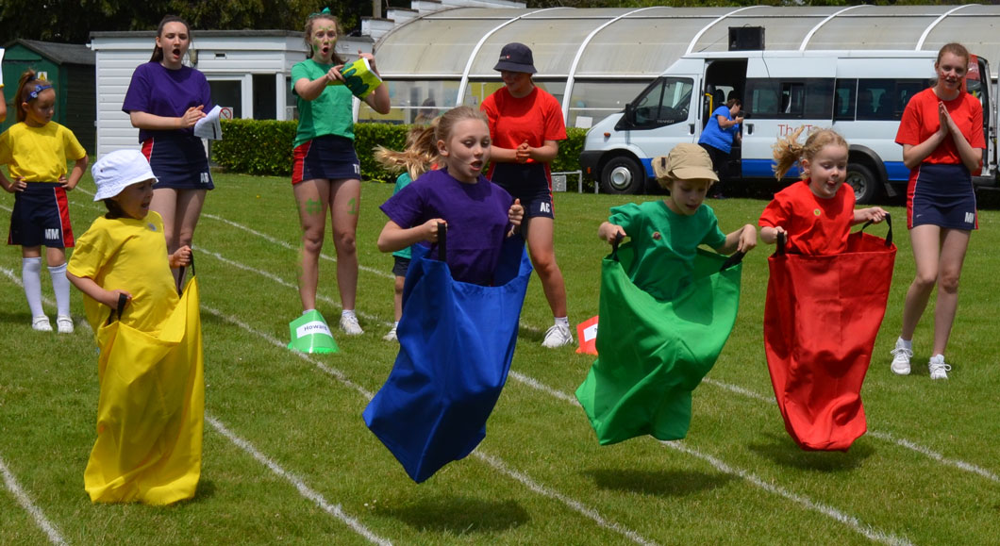
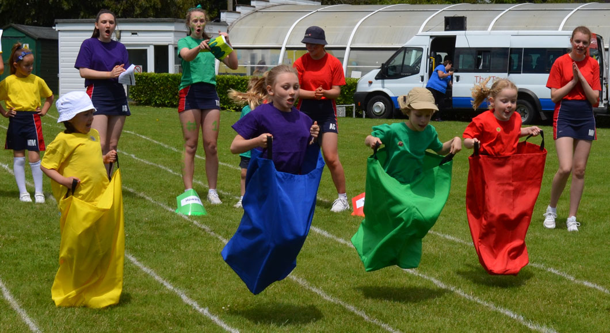

"The sack race, a timeless and exuberant outdoor game for kids, brings a sense of exhilaration to playtime. Participants slip into large sacks, their legs confined, ready to embark on a hopping adventure. The goal is simple: reach the finish line first. However, what unfolds is a spectacle of laughter, camaraderie, and a friendly dash that transcends the bounds of the ordinary. As children enter their sacks, they instantly transform into hopping contenders, each step a challenge, each leap a burst of energy. The sack's confines demand a unique form of movement, one that blends determination and balance. With giggles echoing through the air, participants embark on this whimsical journey, their sack-bound legs propelling them forward. "
Sack Race Game Playing Criteria!
Participating in a sack race, a thrilling outdoor kids' game, involves adhering to specific criteria for a safe and enjoyable experience:
Sack Selection: Choose suitable, sturdy sacks that can comfortably accommodate a child's body.
Game Area Setup: Designate a clear, open space for the race, ensuring a flat and safe surface.
Starting Line: Clearly mark the starting line for participants to line up behind.
Finish Line: Establish a visible finish line that racers must reach to complete the race.
Sack Entry: Players step into their sacks, pulling them up to their waist.
Safety Measures: Emphasize safe play, including avoiding sharp turns or obstacles during the race.
Race Coordination: Organize participants into heat groups, considering age and physical ability.
Ready Position: Racers stand within their sacks, with the opening secured around their waist.
Hopping Technique: Players use both legs to hop forward while keeping their balance.
Starting Signal: Begin the race with a clear signal, such as a whistle or verbal command.
Fair Play: Encourage friendly competition and sportsmanship among participants.
Race Focus: Racers concentrate on hopping and maintaining balance while moving forward.
No Physical Contact: Avoid pushing, bumping, or any physical contact with other racers.
 
